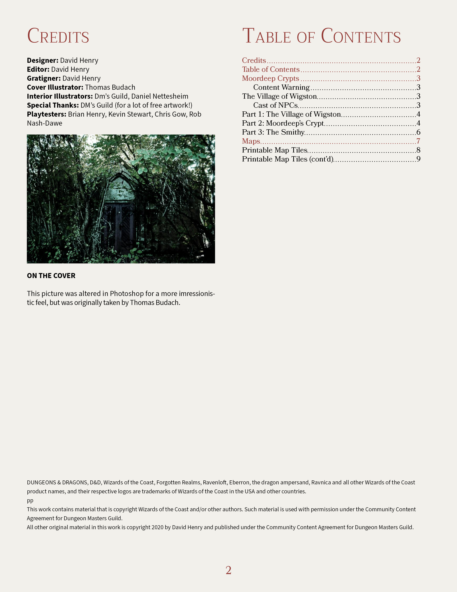
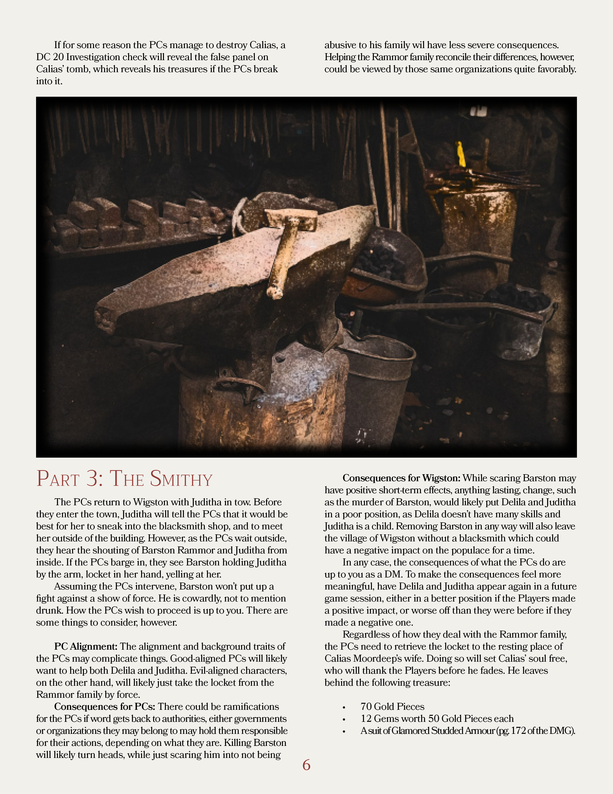
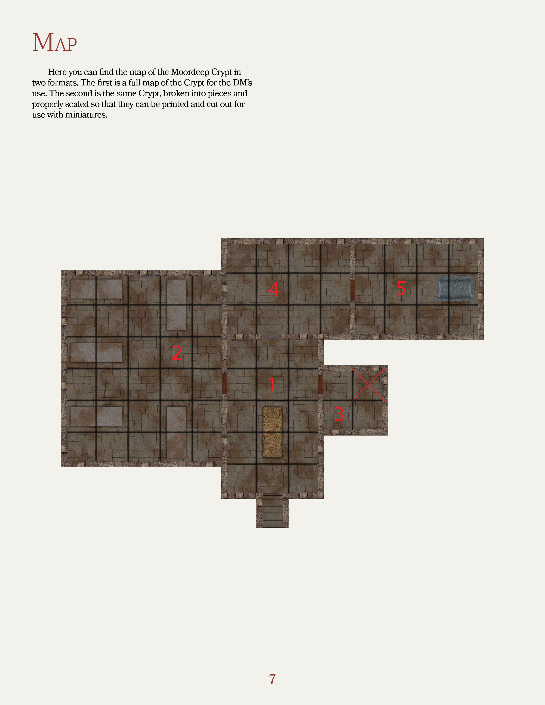

Mordeep Crypts - A Dungeons & Dragons 5th Edition Module
My first D&D module I published, Moordeep Crypts is an adventure for 2nd level characters. It starts as a bog-standard dungeon crawl but has a narrative twist at the end. This follows all branding and style guides for the Dungeon Master's Guild.

In the sleepy farming village of Wigston, a family in trumoil stirs a sleeping threat to their town when a young girl re-discovers the old crypt of a rich family. Local adventurers must be called to solve the threat of those that dwell within, but is there more to the girl than first thought?
Feel free to browse the screenshots or download the .pdf file on the Dungeon Master's Guild by following the link below!
Moordeep Crypts Adventure on Drive Thru RPG

